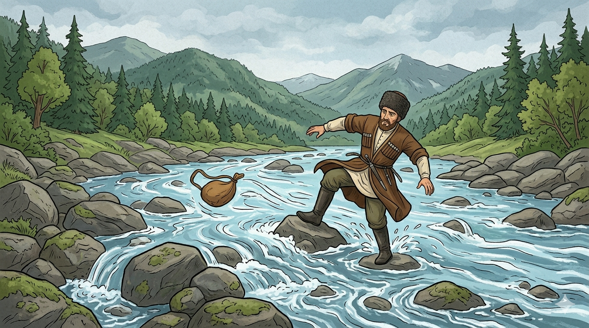

И.А. Дахкильгов. Хьехаме дувцарш - поучительные рассказы-притчи.
И.А. Дахкильгов. Хьехаме дувцарш - поучительные рассказы-притчи. Из ингушского фольклора.

Ялата хам
Цкхьаккхача ялатах, кӀа из дале а, хьажкӀа яле а, хам беш хиннавацар цхьа саг. Юхе мел дисачунга хьежача, из иман долаш хиларах, Далла лаьхӀа хиннадар цунна таӀазар ца а деш, ялата хам бовзийта. Цкъа гаьнача наькъагӀа ваха везаш хиннав из саг. Водо-ош, хих вала везаш хиннав. Цох дехьаваалача хана, хина юкъе, ког лажа хи чу вахав из. Цун кач илла кхача чу болаш хинна тӀорми хиво Ӏобихьаб. Дехьа а ваьнна, уйла е Ӏохайнав из: "Фу дича бакъахьа да? Указара ваьнна дӀахо дӀаводаш а е укхазара юхавийрза цӀенгахьа водаш а цхьатарра ха йоае езаш да. Сай наькъах дӀахо дӀагӀоргва-кха со", - лаьрхӀад цо. Дукха гаьна валалехьа цхьа га ейнай цунна. Цу гаьн тӀа Ӏо а хайна, ший бӀена чу а кхийста, цхьа оалхазар дӀадахар. Цу сага дага эттад: "Цу бӀена чу фуаш хила деза". Гаьн тӀа а ваьнна, бӀена чу хьежача, уллаш ейнай цунна хьажка тум. Цу томарах боаллаш хиннаб ворхӀ фийг. Из тум а ийца, дӀахо ший наькъагӀа дӀавахав из. Ше мел вода хӀарача ден цхьацца хьажкӀа фийг буаш дӀакхаьчав. Цу хана денна кхийтта хиннав из саг ялата хам бе безаш болга.
РУССКИЙ
Цена хлеба
Некий человек весьма пренебрежительно относился к хлебу кукурузному или пшеничному. Но сам он в остальном был порядочный человек. Поэтому бог решил не карать его, но проучить. Как-то этому горцу надо было отправиться в далекий путь. Он прихватил с собою еду и пошел в дорогу. На пути встретилась ему река. Начал он ее переходить, да не середине реки поскользнулся, и река унесла его суму с оставшимися припасами. Перебрался он через реку, сел и стал думать: "Что же делать? Что назад идти, что вперед - все едино. Пойду-ка я вперед". Немного прошел и увидел дерево. Какая-то птица подлетела к нему, повозилась в гнезде и улетела. Горец подумал : "Наверняка, в гнезде есть яйца". Взобрался он на дерево и видит: в гнезде лежит кукурузный початок, а в нем осталось всего семь зерен. Взял он початок, спустился на землю и продолжил путь. Шел он и в день съедал по одному зерну. Так и дошел. С тех пор понял горец, как ценен хлеб, и чтил его.
ENGLISH
НОХЧИЙН
ПОГОВОРКИ